SaGa30周年記念イベントを振り返る
2020年8月～9月に開催されたロマサガRSの30周年記念イベントでは、ゲームボーイ（以下GB）のSa・Gaに関するイベントが開催されました。
私はGB SaGaをリアルタイムでプレイしていた世代なので、懐かしい気持ちでそれらのイベントを楽しむことができました。
しかし、GB Sa・Gaを未プレイの方からしたら元ネタがわからない分楽しみも半減だったのかも？と思ったので、ロマサガRSで出てきたGBのネタを実査いのGBの画面を使いながら紐づけて解説してみようかなという気持ちで、この記事を書きました。
GB Sa・Gaのネタバレを多分に含むため、ネタバレを見たくない方はここから先を見る前にブラウザの戻るボタンで戻ってください。
魔界塔士Sa・Gaの世界観
GBで魔界塔士Sa・Gaを起動して「はじめから」を選択すると冒険開始。最初に出てくる画面がこれです。
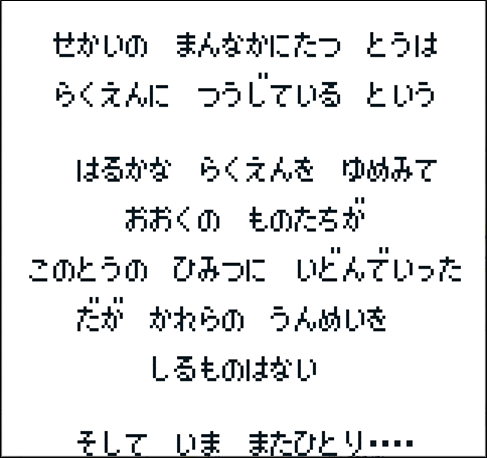
楽園を目指してひたすら塔を上るというものです。
これを踏まえると、にんげんおとことにんげんおんながホーム画面で言っていた事の意味が分かると思います。
楽園を目指して塔の最上階を一緒に目指そう！と言っています。
次の画面はキャラクタ選択画面。この中から主人公一人と仲間三人の合計四人を選択します。
ロマサガRSのガチャ第一弾のにんげんおとこ、にんげんおんな、エスパーギャルはこの中から選ばれたキャラです。
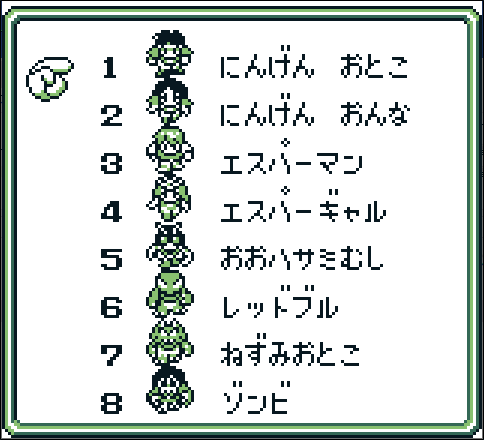
にんげんおとこは初期ステータスが力に振られていて、にんげんおんなは素早さに振られています。
ロマサガRSでにんげんおんなが体術キャラなのは、素早さへの依存度が大きいからそうしたんでしょう。
器用さなんてステータスはGB版にはないのですが、魔界塔士Sa・Gaでは銃系の武器も出てくるので、にんげんおとこを銃キャラにしたのはそんなに違和感ないです。
にんげんおとこ、にんげんおんなは8個アイテムを所持できます。ここに武器や防具などを装備させていきます。
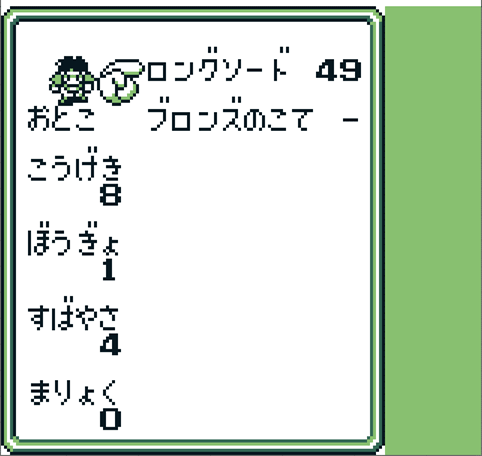
エスパーギャルも枠としては8個あるのですが、そのうち4個は「-」になっています。
ここはエスパーギャルの特徴で、この枠にランダムでにんげんには使用できない能力を覚えていきます。

なので、ロマサガRSのエスパーギャルがホーム画面で言っているこのセリフは、この所持枠が少ないことを言っています。
モンスターの話とせんせいのイートザミートの話をここに入れる
第一世界（げんぶ）
白と黒の塔に出てきた「むら１ばんのびじん」。一応他のスライムよりも美人っぽく書かれている・・・？（まつげが長いｗ）原作の画面。むら１ばんのびじんと他の町の人との違いがわからないｗｗ
（左：むらいちばんのびじん、右：同じ町にいる別のスライム） 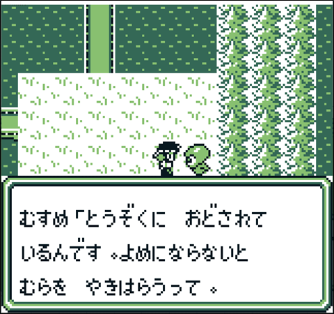

盗賊に脅されているとのことなので、盗賊を退治しに行きます。


これ、にんげんおとこのガチャ演出に採用された場面です。
まあ、盗賊と言いつつ、どくがえるなのですが、、、
あとは1Fのボスであるげんぶの画像を紹介して1Fは終わろうと思います。
げんぶ

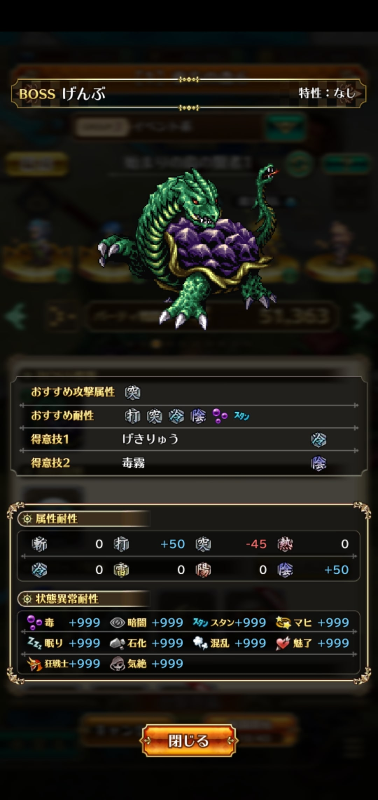
第二世界（せいりゅう）
第二世界でネタになっていたのはこの画像です。
この人は龍神様で、重要アイテムをゲットするためにはこのなぞなぞに答える必要があります。
出題されるなぞなぞは三種類あって、画像はその内の一つです。

画像の答えはきんのはり。FFでもお馴染みで、せきか状態を回復するアイテムです。
・・・針治療とかそういうことですかね・・・？
他の二つの問題は以下の通り。
| 問題 | 答え |
|---|---|
|
ロングソ－ド２ほんと ゴールドかぶと３つと ポ－ション４こで なにがかえる？ こたえのしなを さがせ！ それを もって わしのところに くるのだ！ |
せいりゅうとう |
|
うみにちかいと ちいさくて やまにちかいと おおきいもの なんだ？ |
いわ |
ちなみに、制圧戦のドロップ報酬で「うみのいわ」っていうアイテムと「やまのいわ」っていうアイテムがありますが、
これ、うみのいわは小さい岩がたくさんある画像になっていて、やまのいわは大きい岩一つの画像になっています。
この問題を踏襲したものですね。

※アイシーチップは第四世界で出て来るアイテムです。
あとは第二世界のボスであるせいりゅうの画像を紹介して第二世界は終わろうと思います。
せいりゅう
 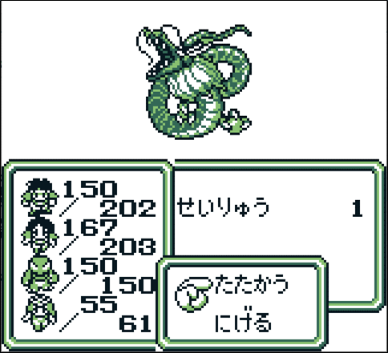
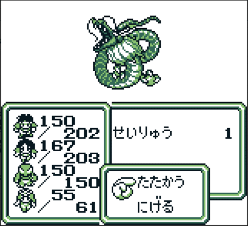
第三世界（びゃっこ）
第三世界の最初の町でびゃっこの手下と戦って勝つと、びゃっこ城に案内されて、びゃっことの会話が始まります。
ジャンヌという女性を探すことになります。

 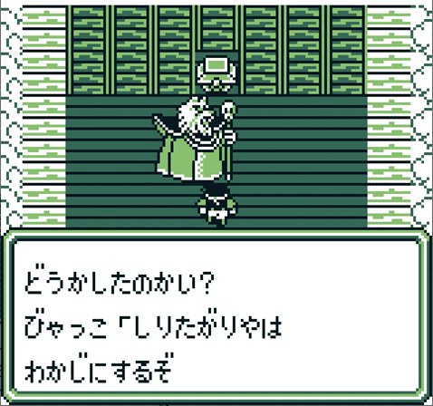
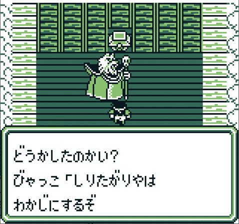

ジャンヌを発見しますが、先客がいます。
これがローディング画面の場面です（もう一歩下で話しかければ全く同じ絵になりますね）。


 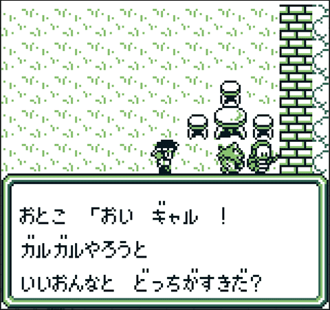
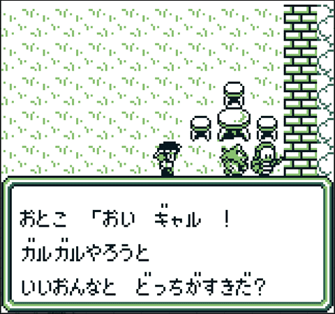
ってか、おとこ、「おい ギャル ！」って、女性に聞くことかこれ？ｗ
魔界塔士Sa・Gaにおいては、このような会話は隊列の順番で会話の相手が決まる仕様になっています。
この会話の場合は、隊列の１番目のキャラが４番目のキャラに話しかける仕様になっています。
今回は以下の隊列でイベントを発生させました。

このため、隊列の順番を入れ替えることで会話の相手を変えることが可能です。
隊列２

変更後の会話


隊列３
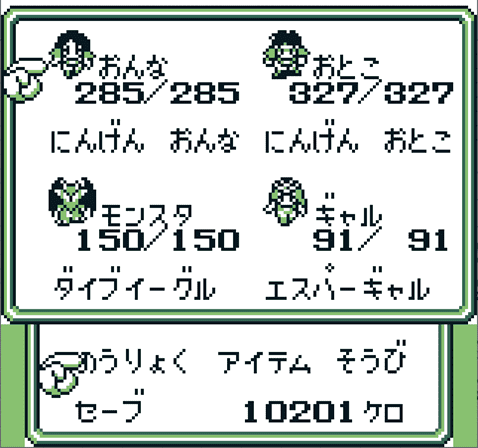
変更後の会話
 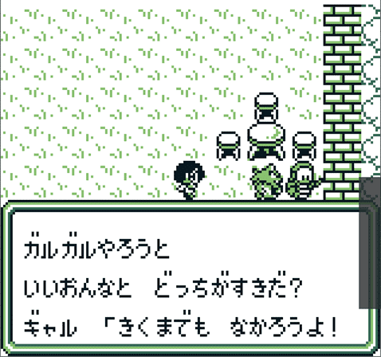
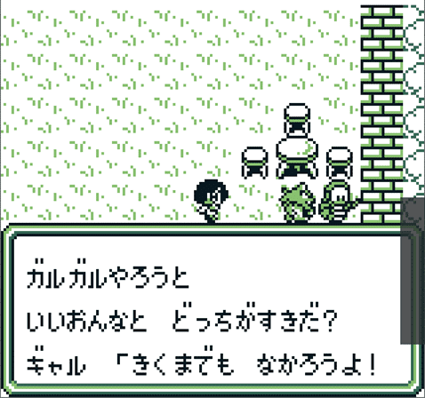ジャンヌを助けると、妹のミレイユを助てくれとお願いされます。
知っている人も多いかもしれませんが、この妹のミレイユという女性はスクウェア三大悪女！
・・・として扱うのは微妙かもしれませんが、三大とは言わないまでも悪女として扱われている女性です。
以下の画面はミレイユを助けようとしている画面です。
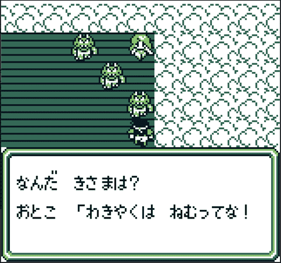
これはロマサガRSのにんげんおんなのガチャ演出にもなった場面です。

助けた後の会話がこちら。
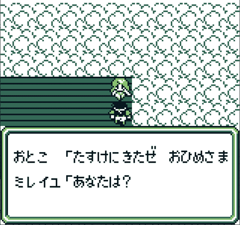 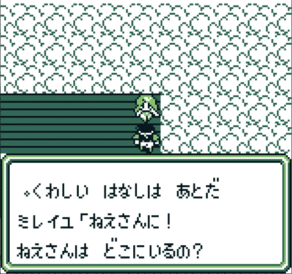


うーん、流石悪女。。。
この後、ぶち込まれた牢獄を脱出してなんやかんやあってびゃっこと戦う直前の場面がこれ。

 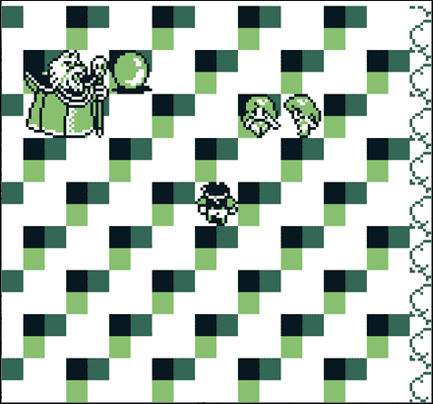
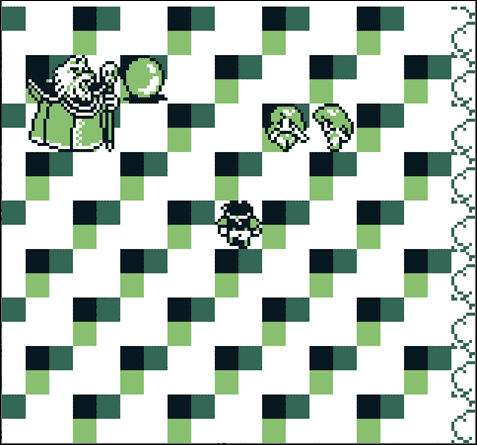
 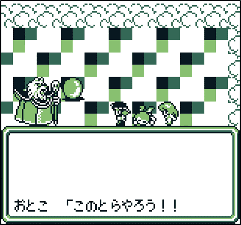
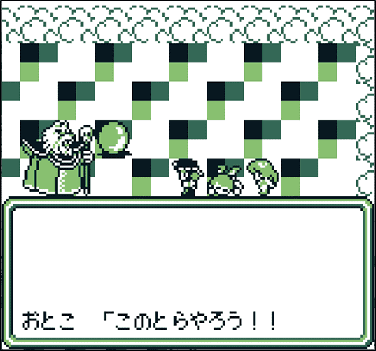これ、ローディング画面にもなっていた場面ですね。

びゃっことの戦いの後、ジャンヌはクリスタル（重要アイテム）を残して消えてしまいます。

この辺のやり取りは、ロマサガRSの「神のゲームと白と黒の塔」でも出てきましたね。
その後、ジャンヌは消えてしまうのですが、その時のミレイユのセリフがこれ。
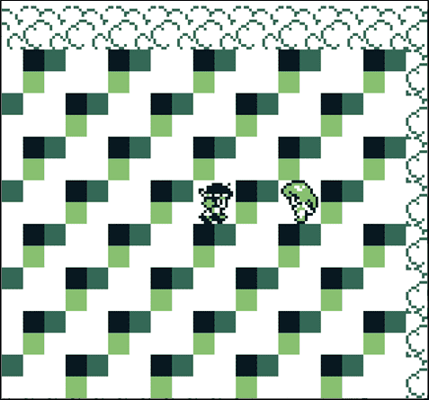
あ、はいっ・・・
いや、まあこれは姉が消えてしまったことがショックだったので、一人にしてほしかったんでしょう。。
第三世界のネタはこれぐらいだと思います。
第三世界の最後にびゃっこの画像を載せておきます。
あとは第三世界のボスであるびゃっこの画像を紹介して第三世界は終わろうと思います。
びゃっこ


第四世界（すざく）
16Fはすざくの世界
この世界では、フィールド（地上）を歩いているとボスであるすざくと遭遇します。しかし、このすざくはバリアに守られているため、ダメージを与えることが（ほぼ）できません。
このため、地上ですざくと遭遇した場合はにげるしかありません。
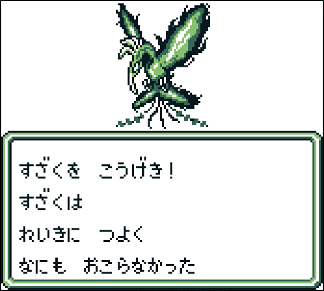

仕方なく地下を歩きながら町を探していると、女性がモンスターに襲われているため、助けます。
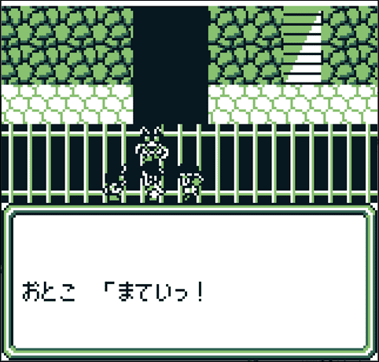
助けると、この先に町があることだけを伝えてどこかに行ってしまいます。

町につきました。どうやら酒場はゾク（族？暴走族？）のたまり場らしいです。これは酒場に行けというフラグですね。

酒場の前にはバイクがありますが、まだ乗れません。

酒場に入ると、総長と呼ばれている人にタイマンを吹っ掛けられますが、先ほどの女性が現れて止めてくれます。


どうやら総長はすざくのバリアを中和する装置を作っているらしく、そのお手伝いをすることに。ついでにバイクを貸してくれるらしい。
 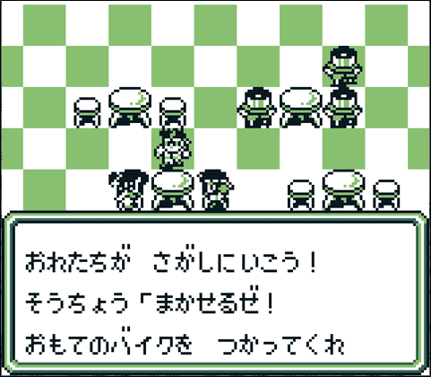
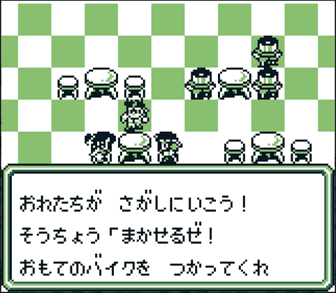バイクに乗れるようになります。倍速移動できます。
お店の中でもバイクに乗れる！

階段だって登れちゃう！ｗ
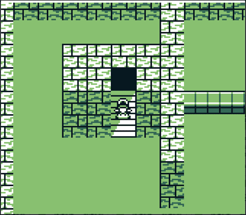
このお店ではネコのツメを売っています。ロマサガRSでにんげんおんなが使えるあの技です。
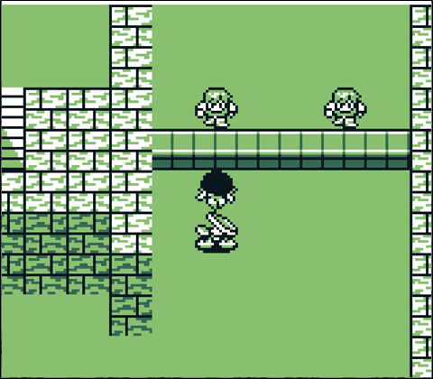
すざくのバリアを中和するために必要なアイテムの一つはアイシーボードです。
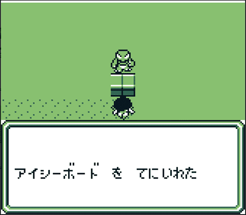
これは制圧戦の報酬にもなっていたアイテムです。
・・・あれ？アイシーボードじゃないじゃん。アイシーチップじゃん・・・？違うのか？？ま、いっか。きっと元ネタはこれです。・・・ですよね？ｗ
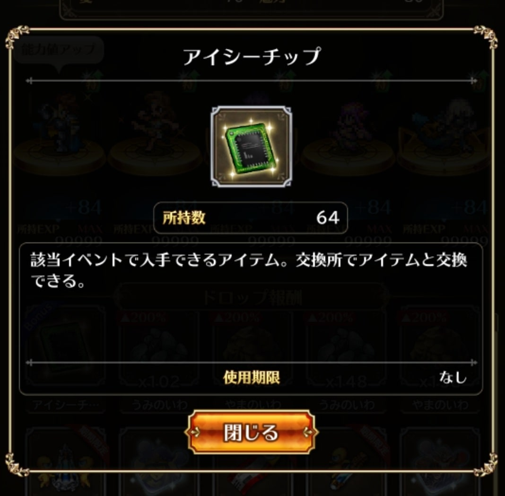
アイシーボードを手に入れてから総長に話しかけると凄いことを言います。。。。
ブツがある場所の前。バリアが張られていて扉までたどり着けません。するとそこに総長が。現れ、体当たりで強引にバリアを破壊していきます。
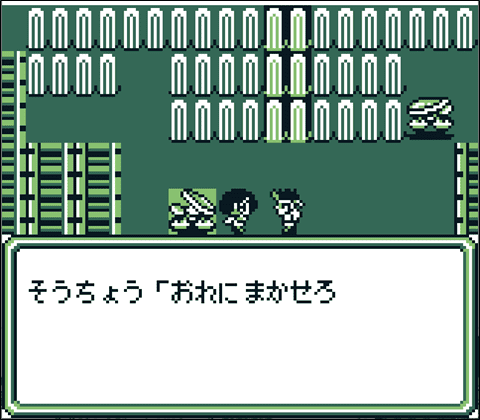 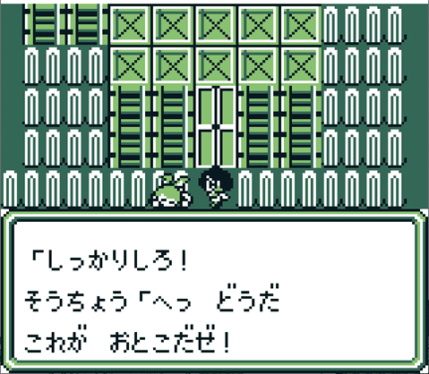

これがローディング画面で採用されていた場面です。

そしてこれでゾクのはちまきを手に入れることができます。
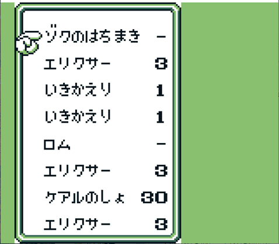
お分かりかと思いますが、ロマサガRSのイベントで入手したアイテムです。

ブツをゲットして、すざく用バリア消去装置イレイサー99を手に入れます。
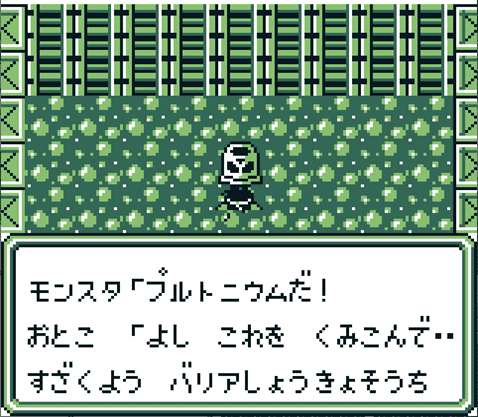 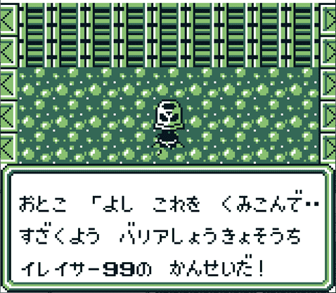
シンニュウシャアリという警報とともにデスマシーンが現れます。
 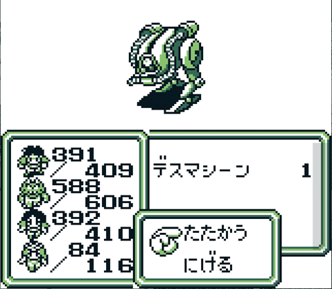
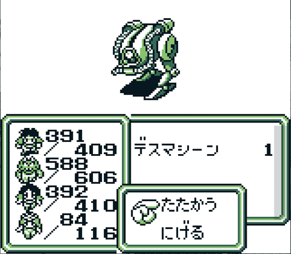ロマサガRSの制圧戦でもデスマシーンという敵が出てきましたが、微妙に違います。
ロマサガRSのデスマシーンには「２」って書いてあるのでこれはSa・Ga2 秘宝伝説のデスマシーンです。・・いや、ホントデスヨ？ｗほら！


こうして手に入れたイレイサー99を使うことですざくのバリアを中和することができるため、すざくを倒すことができます。
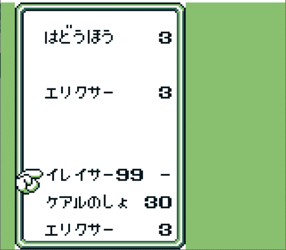

第四世界のネタはこれぐらいだと思います。
第四世界の最後にすざくの画像を載せておきます。
あとは第四世界のボスであるすざくの画像を紹介して第四世界は終わろうと思います。
すざく

アシュラ

この話を聞くとなぜか「やばいばくだん」を手に入れることができます。いや、なんで！？

神様から授かった剣「エクスカリバー」を護っているおじさん

その他雑魚敵
第一世界アルバトロス
ぶとうか
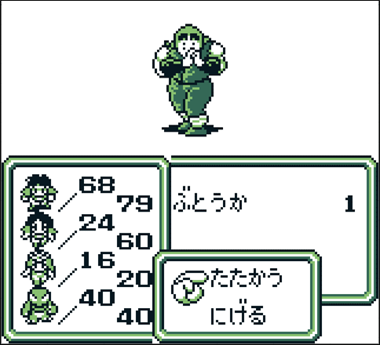
ゴブリン
レッドブル
第二世界（塔の2階～5階）
あおだいしょう
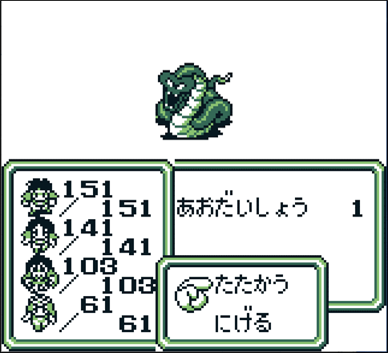
エビル
ガーゴイル
いもむし
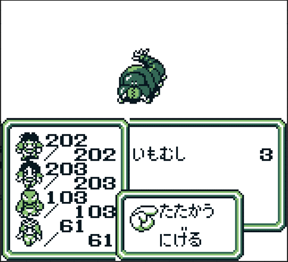
ファントム
第三世界（塔の6階～10階）
マンティコア
メドューサ
ベビードラゴン
ぼくじん
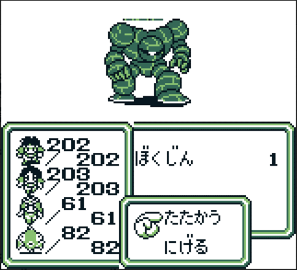
第四世界（塔の11階～16階）
からすてんぐ
デスマシーン
以上！